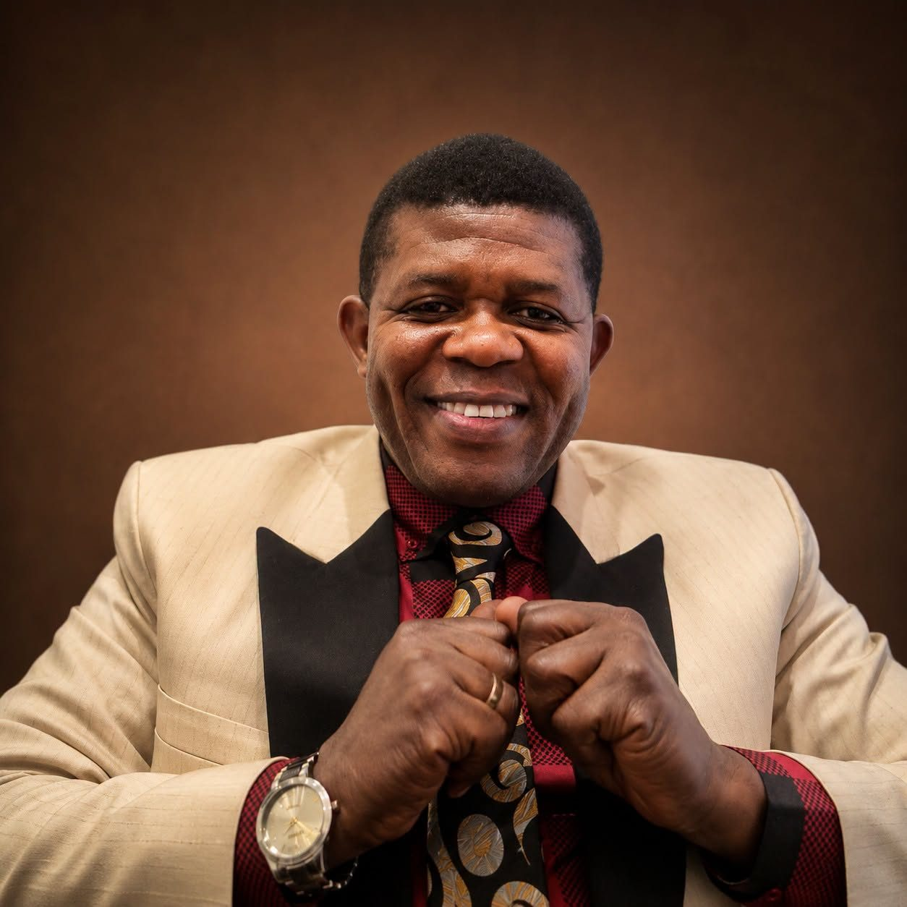

A Community Built on Faith, Hope & Love
Life Grace Ministries International is dedicated to spreading the Gospel of Jesus Christ, transforming lives and building a strong community of believers through worship, prayer and service.
Through faith-centred teaching, leadership development and outreach programmes, we help individuals discover God's purpose and strengthen their spiritual journey.


Bringing Hope, Healing & Encouragement
Our calling is to bring hope, healing and encouragement to families and communities, creating an environment where everyone can experience God's love and grace.
Under the leadership of Bishop Dr. Vitalis Odumma, founder and spiritual leader, through prayer, teaching and community outreach the ministry has grown to over 15 years of service with a global outreach mission — from worship gatherings to the Lord's City Adoration Ground project in Imo State.
Our Purpose
Our Mission
To share the Gospel of Jesus Christ, strengthen believers through prayer, worship and discipleship, and serve communities with love, compassion and faith.
Our Vision
To build a Christ-centred community where individuals and families grow in faith, experience God's love and discover their purpose.
What We Hold Dear
Faith
Trusting God and growing through His word.
Prayer
Seeking God together for individuals, families and nations.
Compassion
Serving people with love, patience and practical care.
Community
Welcoming every age and background into one family.
Rooted in the Gospel of Jesus Christ
Our teaching and ministry centre on the Gospel of Jesus Christ and the authority of God's word.
- Jesus Christ is at the centre of our worship and message
- Prayer strengthens believers, families and communities
- Discipleship and biblical teaching build lasting faith
- Love in action — serving those in need
Growing Together in Faith
Our gatherings create space for heartfelt praise, biblical teaching and prayer. Come as you are, connect with a welcoming church family and find encouragement for the week ahead.
From children and young people to families and seniors, everyone has a place to participate, discover their gifts and grow in the love of Christ.

Meet Our Leaders
Dedicated servants of God leading with faith, vision and compassion.

Bishop Dr. Vitalis Odumma
Bishop Dr. Vitalis Odumma is the founder and spiritual leader of Life Grace Ministries International. Through prayer, teaching and community outreach, he has dedicated his life to spreading the Gospel and helping people discover their purpose in Christ.
His leadership reflects a simple calling: share the Gospel with compassion, help people grow in faith, and serve each community with grace.
Rev. Grace Odumma
Rev. Grace serves faithfully alongside the ministry, inspiring believers through worship, prayer, leadership and compassionate service. Her passion for faith, encouragement and spiritual growth has impacted many lives.
Her ministry focuses on empowering women, strengthening families and mentoring young people to live lives filled with faith, hope and purpose — through prayer ministry, community outreach and worship leadership.
With a heart for people and a steady spirit of encouragement, she helps make worship and fellowship a welcoming place for every generation.

Give with purpose
Support the Lord's City development project or give directly to LifeGrace Ministries church ministry.